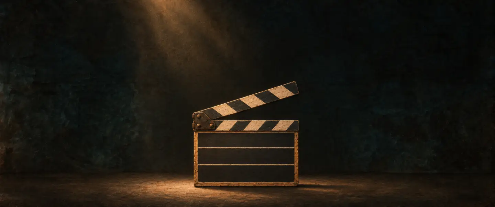
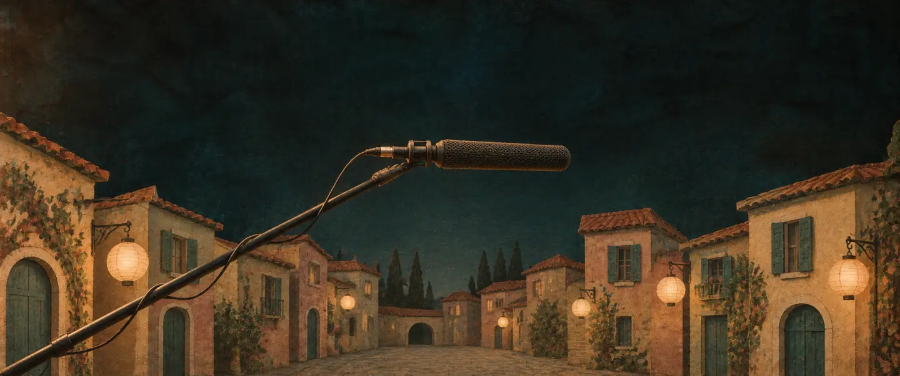
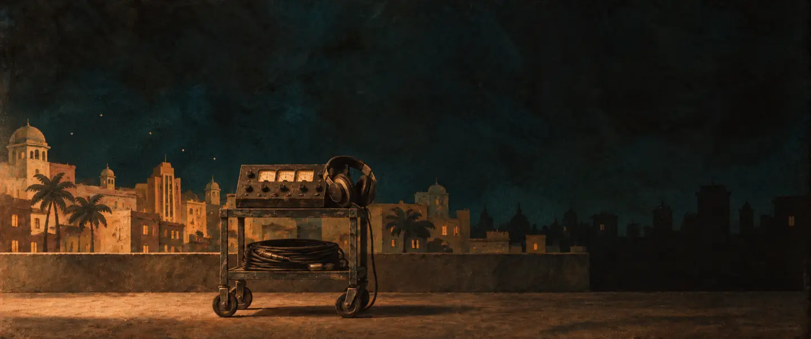
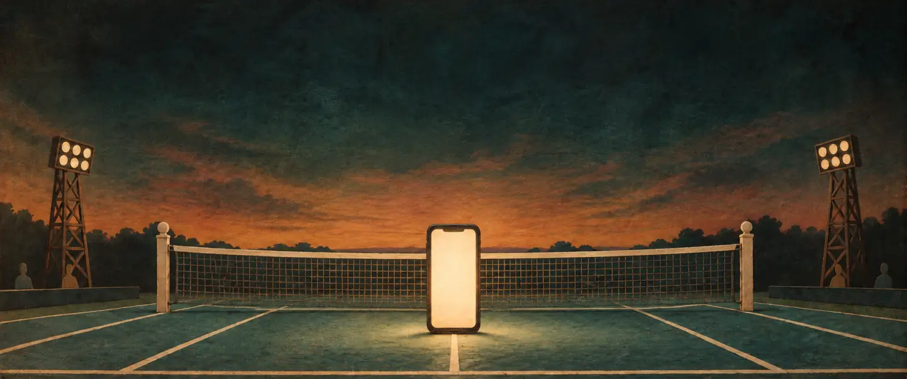
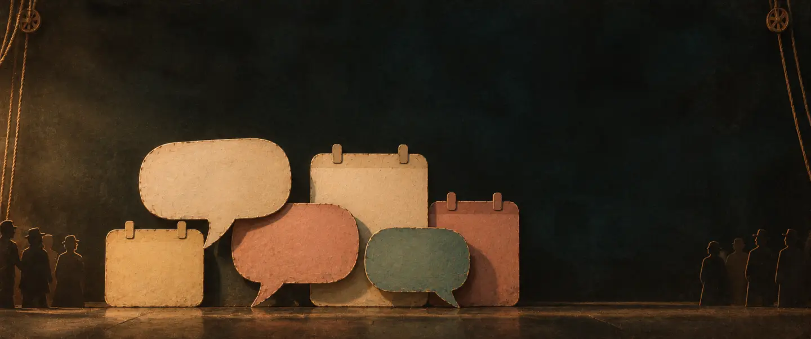

“I trained to record and design sound for films.”
Sc. 1 · Voice-over, Rahul

The Fame Game · Netflix
Bandish Bandits · Prime Video
Hundred · Hostages · Hotstar
Production sound mixer
“Netflix, Prime and Hotstar sets in Mumbai.”
Sc. 2 · The credits

“Then I built the software a sports venue runs on.”
Sc. 3 · From set to software

642 bookings since May
Self-serve 15% → 74%
“People book, pay and renew inside WhatsApp.”
Sc. 4 · Project 831
“Now I design in code. Every product gets a final mix.”
Sc. 5 · A Trip to the Moon, 1902, re-staged